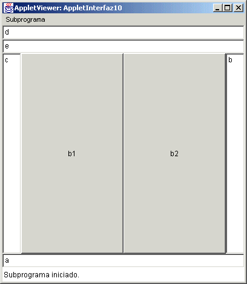
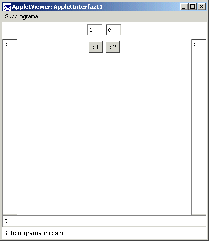
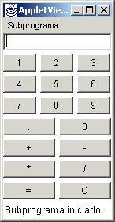

Módulo 4:
Interfaz Gráfica 
3. Más Ejemplos
Si utilizamos un BorderLayout, por ejemplo, este solamente tendra opción a un solo elemento para cada una de las zonas que el BorderLayout utiliza, pero si en lugar de tomar un elemento en el, utilizamos un Panel y a este panel le damos otro tipo de Layout, nuestra distribución cambia.
Veamos el siguiente ejemplo:
import java.awt.*;
import java.applet.*;
// <applet width="400" height="400" code="AppletInterfaz10"></applet>
public class AppletInterfaz10 extends Applet {
Button b1, b2;
TextField t1, t2, t3, t4, t5;
Panel p1, p2;
public AppletInterfaz10() {
setLayout(new BorderLayout());
p1 = new Panel(new GridLayout(2,1));
p2 = new Panel(new GridLayout(1,2));
t1 = new TextField("a");
t2 = new TextField("b");
t3 = new TextField("c");
t4 = new TextField("d");
t5 = new TextField("e");
b1 = new Button("b1");
b2 = new Button("b2");
add(t1, BorderLayout.SOUTH);
add(t2, BorderLayout.EAST);
add(t3, BorderLayout.WEST);
p1.add(t4);
p1.add(t5);
p2.add(b1);
p2.add(b2);
add(p1, BorderLayout.NORTH);
add(p2, BorderLayout.CENTER);
}
}
Cuyo applet aparecerá:

De esta manera observamos que en el centro del Applet tenemos dos botones en lugar de uno y en la parte de arriba (norte) tenemos dos campos texto en lugar de un solo elemento.
Al utilizar el GridLayout y modificar el tamaño de los elementos podemos observar como se ajustarán automaticamente dichos elementos.
Una manera de visualizar el cambio en el mismo applet, con diferente definición de manejador del espacio, es cambiando la definición de los paneles, teniendo en lugar de un Grid Layout para ambos un Flow Layout, de la siguiente manera:
import java.awt.*;
import java.applet.*;
// <applet width="400" height="400" code="AppletInterfaz11"></applet>
public class AppletInterfaz11 extends Applet {
Button b1, b2;
TextField t1, t2, t3, t4, t5;
Panel p1, p2;
public AppletInterfaz11() {
setLayout(new BorderLayout());
p1 = new Panel(new FlowLayout());
p2 = new Panel(new FlowLayout());
t1 = new TextField("a");
t2 = new TextField("b");
t3 = new TextField("c");
t4 = new TextField("d");
t5 = new TextField("e");
b1 = new Button("b1");
b2 = new Button("b2");
add(t1, BorderLayout.SOUTH);
add(t2, BorderLayout.EAST);
add(t3, BorderLayout.WEST);
p1.add(t4);
p1.add(t5);
p2.add(b1);
p2.add(b2);
add(p1, BorderLayout.NORTH);
add(p2, BorderLayout.CENTER);
}
}
Cuyo applet aparecerá

Esto nos da la idea de que al cambiar el tamaño de la ventana, los elementos que estan en los paneles no se ajustan.
Podemos entonces cambiar la apariencia de los Manejadores de Espacio si es que no se ajustan a lo que queremos manejar.
1. Utilizando paneles y distribución de layouts diferentes, crea un campos de texto y todos los botones de una calculadora sencilla, un botón para cada dígito, uno para cada operador aritmético y uno para borrar (C), para que dé la apariencia de una calculadora, algo parecido a la figura siguiente:

http://java.sun.com/docs/books/tutorial/uiswing/
http://java.sun.com/j2se/1.4.2/docs/api/ consultar Label, TextField, TextArea, Button, Panel, Choice, List, FlowLayout, BorderLayout, GridLayout.